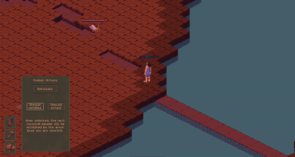
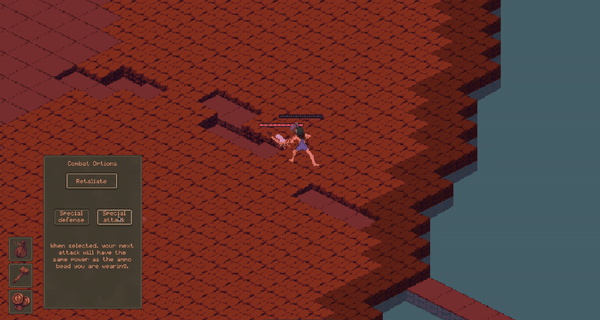
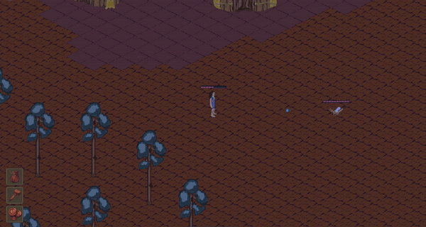
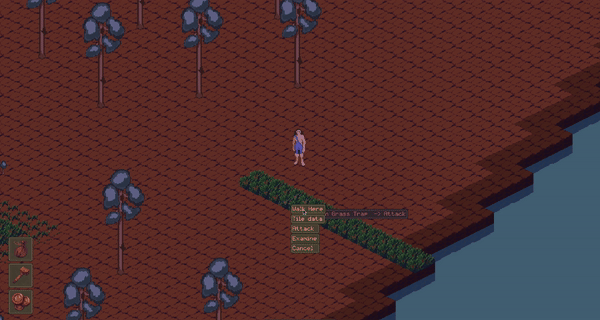

Changes post game jam
First of all, I want to give a heartfelt thank you to everyone that took the time to give feedback during the FarmJam 2024. It means a lot that so many people were willing to try multiple times despite crashes and annoyances to give this game a fair shot. There were a lot of people that took a look at this game and I am very grateful. I have removed the previous version of the game from the jam given that I got a ton of feedback and have a concrete direction to go in, and since there were some glaring issues I don't expect many folk to make it past them. If you did not get a chance to rate the game, check back once the jam ends and you'll be able to play a more refined version. In the meantime please play someone else's game, there are a number without many ratings. If you are eager to play, you can download this version at the bottom of this post.

Now for the update:
I have spent quite awhile this past week on squashing bugs, adding UI optimizations for ease of use, and have made a few pieces of additional content. I tried to focus a lot on the quest and on crafting, since that seemed to be a bottleneck for folks trying out the game.
First, bug fixes:
- Fixed an issue where tile coloration didn't change when a water tile was expanded.
- Fixed some problems with the coyote fight
- Rebalanced combat pacing - attacks are much slower now.
- Fixed the issue where the inventory would get full and then stay locked full despite clearing room.
- Plants planted during the quest were not being saved, they are now.
- Items that were placed on the ground were not being saved (fence posts, etc.)
- Right click -> attack has been implemented
Now for content that has been updated or adjusted:
- Quest progress is now non-linear, meaning doing some tasks for the uncle then some for the cousin will not interrupt or affect the other.
- Right-clicking on items to craft in the crafting interfaces now shows the requirements
- Added icons for the inventory and equipment tabs
- Added a combat tab that allows you to choose whether the player auto-retaliates to attacks.
- Added projectiles, and a way to calculate ranged damage.
- Added numbers that show how much damage is taken and received. This number is after defensive calculations, so the number that has an affect on hp.
- Added a special defense, where if the equipped imbued bead are the same typing as the enemy attack, all damage will be mitigated. I will be making another post explaining how imbuing works at some point. 
- Similarly, added a special attack that is either blocked by the opponent or the attack is enhanced. 
Completely new additions:
- As you saw above, a new mayfly enemy. It shoots water and will be featured in the upcoming quest. 
- Added a new tile type, traps! This will be useful for what I am planning for the upcoming quest and also for creating unique obstacles later on. The featured trap is a corrupted grass that an enemy will use to damage the player. 
- Added a grasshopper herbivore (not enemy) that can be imbued for another special attack.
- Added a quest journal that informs the player where they are in progressing the quest. I think this will be useful for orienting the player to what is next and reminding them if they took a break from the quest.
Next steps:
- As mentioned, I have some big plans for another quest. This quest will be a tutorial for the combat system and serve to help the player understand imbues and attack and defense typing. There will be a boss, and some neat rewards!
- I still have a long way to go in terms of helping the player understand how to use all of the tools and make it clearer what is actually possible in the game. I have some ideas for this but am also open to suggestions.
- I still need to make the player die, and create logic for player and enemy respawns.